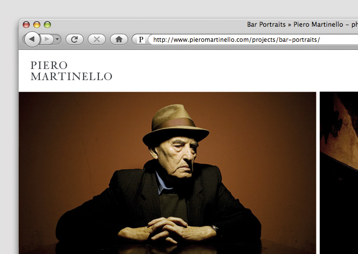
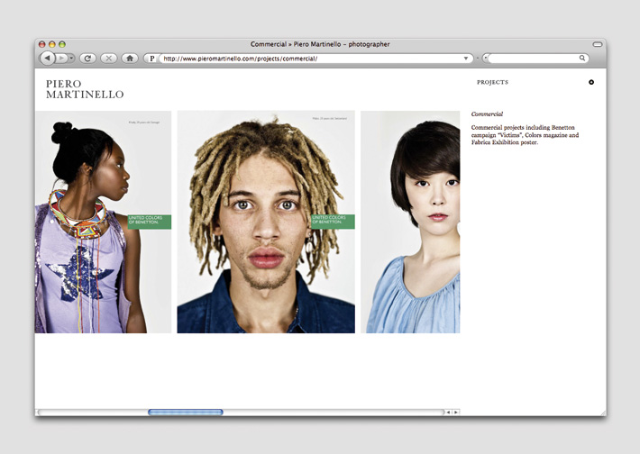
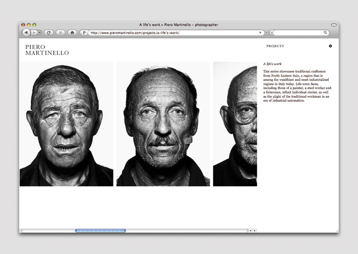
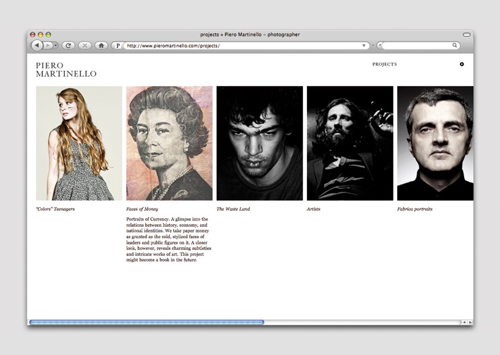

- Client & location
- Piero Martinello, Treviso ( Italy )
- Industry
- Photography
- Services
- CMS
- web development
- web design
- 
- 
- 
- 
description
Piero Martinello – photographer
Piero Martinello is a young talented photographer from Italy. After two years at Fabrica, the prestigious communication centre of Benetton, Piero needed a website to show his portfolio. At Fabrica, Piero worked extensively for Colors Magazine, Wanted Creativity and Internazionale, as well as for various social awareness campaigns and personal projects. His work has been published in La Repubblica, The Herald, Le Monde, Il Corriere della Sera, La Stampa and La Tribune.
Piero’s speciality is portrait photography and he usually works in series. For this reason we proposed to him a horizontal navigation system for the site so picture series are displayed one next to the other. He chose one of his series for the home page, so every time a user enters the website, there is a different picture of the same series displayed in large format.
Scroll liked Piero’s portraits so much that we have since worked with him developing a project for Cyan rock band.
“ Scroll Studios is the best web team that I've ever worked with. The guys are very effective. Guillermo is a highly talented graphic designer, Javi an excellent programmer. Together they are a close team that respond to a client's requirements quickly. They are young, they have taste and they know the market's latest trends well. The outcome is an avant-garde website that combines a chic style with a modern praticità. Grandi! ”
PIERO MARTINELLO